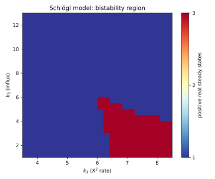

⚗️ A bistable reaction network, mapped in parallel¶
A parameter homotopy is the right tool whenever you must solve the same polynomial system over and over at different coefficient values – a parameter sweep. You pay for one hard solve at a generic parameter, then reach every value you care about by cheap tracking that reuses those start solutions (the 🔁 Parameter homotopy: solve once, re-solve many times tutorial introduces the idea). This tutorial puts that to work on a real problem and then makes it parallel on two levels at once:
MPI across the parameter points – the points are independent, so hand each compute node a slice of them;
threads across the paths – inside each point’s solve, track the paths on all of that node’s cores (this is automatic – a solve is multi-threaded by default).
The driving problem is a chemical reaction network and the question is multistationarity: for which rate constants does the network have more than one steady state?
The Schlögl model¶
The Schlögl network is the textbook example of a bistable reaction network. Its single species \(X\) has a steady state wherever production balances degradation, which works out to a cubic:
The rate constants \(k_1,\dots,k_4\) are the parameters, and they live in the positive orthant (rates are positive). A steady state is a positive real root. By Descartes’ rule of signs this cubic has either one or three positive real roots – monostable or bistable – and which one depends on where you are in parameter space. Mapping that boundary is the goal.
The family is one system at many coefficient values, so we build it with a factory over shared
variables (a parameter homotopy interpolates coefficients, so every member must use the same
Variable object):
import bertini
from bertini.nag_algorithm import parameter_sweep
X = bertini.Variable('X')
def make_system(params):
k1, k2, k3, k4 = params
sys = bertini.System()
sys.add_variable_group(bertini.VariableGroup([X]))
sys.add_function(k2*X*X*X - k1*X*X + k4*X - k3)
return sys
Let the solver do the classification¶
“How many positive real steady states?” is a question about the solutions’ classification –
which are real, which are finite – and the solver already answers it. solver.to_dataframe()
hands back a pandas DataFrame with an is_real and is_finite column per solution (plus
multiplicity and more), so we never re-derive real-ness with a hand-rolled tolerance; we just read
the flags and keep the positive ones:
def positive_real_count(solver):
df = solver.to_dataframe()
n = 0
for _, row in df.iterrows():
if row['is_real'] and row['is_finite']:
sol = row['solution']
x = complex(sol[0] if hasattr(sol, '__len__') else sol)
if x.real > 1e-9:
n += 1
return n
The sweep¶
parameter_sweep() is the whole engine: give it the factory, one
generic (random complex) parameter value to solve once, and the list of parameter values you
actually want. It solves the generic member, then tracks to every target reusing those start
solutions. Here we sweep a grid of \((k_1, k_3)\) with \(k_2 = 1, k_4 = 11\) fixed, and
reduce each solve straight to its positive-real count with collect:
import numpy as np
C = bertini.multiprec.complex_mp
def real_coeff(v): return C(repr(float(v)), "0") # an exact real coefficient
generic = (C("0.7","0.4"), C("1","0.3"), C("0.31","-0.52"), C("1.2","0.9"))
k1s = np.linspace(4.0, 8.0, 5)
k3s = np.linspace(2.0, 10.0, 5)
targets = [(real_coeff(k1), real_coeff(1), real_coeff(k3), real_coeff(11))
for k3 in k3s for k1 in k1s]
counts = parameter_sweep(make_system, generic, targets, collect=positive_real_count)
counts = np.array(counts).reshape(len(k3s), len(k1s))
assert set(counts.ravel()) <= {1, 3} # Descartes: only 1 or 3 positive real roots
assert (counts == 3).any() # ... and the bistable region is in this window
That parameter_sweep call was already threaded – a solve uses every core by default, so
the path tracking inside each grid point ran in parallel with no extra code. For most users, on
one machine, that is the whole story: parallelism for free through the ordinary interface.
Going wide: MPI across the grid¶
The grid points are independent, so to use many machines you hand each MPI rank a slice of the
grid. parameter_sweep does the splitting and gathering for you – pass a communicator and a
collect (only the reduced value crosses ranks, since solver objects cannot), and every rank
comes back with the full list of counts:
from mpi4py import MPI
counts = parameter_sweep(make_system, generic, targets,
collect=positive_real_count, comm=MPI.COMM_WORLD)
# one extra argument (comm=) is the entire difference from the serial version
That is the two-level model in one call: MPI spreads the points across ranks, and each rank’s
solves thread the paths across its cores. The complete, runnable script – which builds the
grid, runs the sweep, and draws the map – is
parallel_parameter_homotopy.py:
def make_system(params):
"""The Schlogl steady-state system at the given rate constants (k1, k2, k3, k4)."""
k1, k2, k3, k4 = params
sys = pb.System()
sys.add_variable_group(pb.VariableGroup([X]))
sys.add_function(k2 * X * X * X - k1 * X * X + k4 * X - k3)
return sys
def real_coeff(value):
"""An exact real coefficient node (a complex literal with zero imaginary part)."""
return pb.multiprec.complex_mp(repr(float(value)), "0")
def positive_real_count(solver):
"""Number of positive real steady states, from the solver's OWN classification.
``to_dataframe`` tags each endpoint is_real / is_finite (and multiplicity, etc.); we keep the
real, finite ones and require the concentration to be positive -- a CRN steady state is a
positive real point. We do not re-derive real-ness ourselves.
"""
df = solver.to_dataframe()
n = 0
for _, row in df.iterrows():
if not (row['is_real'] and row['is_finite']):
continue
sol = row['solution']
x = complex(sol[0] if hasattr(sol, '__len__') else sol)
if x.real > 1e-9:
n += 1
return n
Run it serially, or across ranks with threads inside each (the --bind-to none and
--map-by notes from 🚀 Solving at scale: many cores, many machines apply – and always run a file, never a heredoc):
python parallel_parameter_homotopy.py --grid 28 --save schlogl.svg # serial + threads
OMP_NUM_THREADS=3 mpirun -n 4 --bind-to none \
python parallel_parameter_homotopy.py --grid 28 --save schlogl.svg # 4 ranks x 3 threads
Both produce the identical map – parallelism changes the wall-clock, never the answer:
{kind=link}

The Schlögl network’s steady states over a slice of its positive-orthant parameter space. The red tongue is the bistable region – three positive real steady states; outside it there is one. Each pixel is one parameter homotopy track; the picture is an MPI-across-pixels, threads-within-pixel solve.¶
Where to go from here¶
Swap in your own network: any steady-state system that is one shape with varying coefficients drops straight into
make_system+parameter_sweep. Richer networks have more paths per point, so the per-point threading earns more.Push
--gridup and spread the ranks across a cluster with a hostfile (mpirun --hostfile hosts ...); the sweep code does not change.See 🚀 Solving at scale: many cores, many machines for the other axis – distributing the paths of a single solve across ranks – and 👀 Watching the paths: observers and path data to watch the tracking itself.